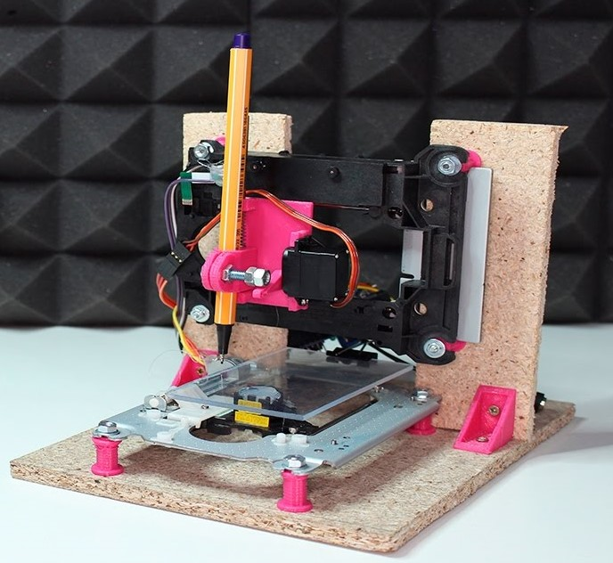

Empecemos por decir que una máquina CNC (es un sistema Control Numérico por Computador que utiliza software de computadora y electrónica para su control) es en definitiva una máquina que controla un grupo de motores con el objetivo de ponerle una herramienta para que realice un trabajo de precisión. Estas máquinas existen desde 1950, no han gozado de popularidad hasta estos últimos años además hasta hace muy poco tiempo era imposible tenerlo en casa, su precio era prohibitivo. Gracias al avance de las tecnologías podemos crear modelos más pequeños pero igual de precisos y disponer de una de estas máquinas. Siempre he tenido (no creo ser el único que sienta curiosidad por estas máquinas) interés por tener una CNC ya las venden económicas, sin embargo, pienso construir mi máquina desde cero.
Perfiles de aluminio: Utilizados para construir el marco y los rieles para los ejes de movimiento.
Placas de montaje: Para conectar y fijar los componentes en el marco.
Husillos roscados o correas dentadas: Para mover los ejes en diferentes direcciones.
Rodamientos lineales: Para asegurar un movimiento suave de los ejes.
Ejes lisos: Para soportar el movimiento de las partes móviles.
Plataforma de trabajo: Donde se coloca el material a trabajar.
Motores paso a paso: Para controlar los movimientos de los ejes.
Controladores de motor: Tarjetas o módulos para controlar los motores paso a paso.
Fuente de alimentación: Para suministrar energía a los motores y electrónica.
Placa de control: Puede ser Arduino o una placa específica de control CNC.
Cables y conectores: Para conectar los componentes eléctricos.
Sensores de límite: Para detectar los extremos de los ejes y evitar colisiones.
Husillo, láser o herramienta de dibujo: Según el tipo de trabajo que quieras realizar.
Herramientas de corte o grabado: Si estás construyendo una fresadora CNC.
Software CAD/CAM: Para diseñar tus modelos y crear las trayectorias de movimiento.
Software de control CNC: Para traducir los diseños en comandos de movimiento para la máquina.